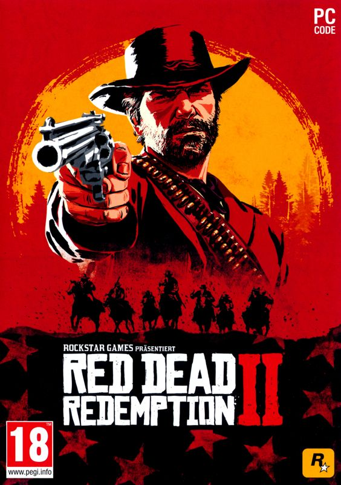

En el videojoc Red Dead Redemption II, el jugador assumeix el paper d'un membre d'una banda de forajits a l'Oest Americà, mentre navega per un món obert ple de missions, caçadores de recompenses i altres personatges perillosos. El joc es centra en la història de la banda Van der Linde i el seu líder, Dutch van der Linde.

Red Dead Redemption II té com a personatges principals a Arthur Morgan, un membre de la banda Van der Linde i el protagonista del joc; Dutch van der Linde, el líder de la banda; i altres membres com Sadie Adler, Hosea Matthews, Micah Bell i John Marston, protagonistes del primer joc.
Preu: 16.99€
Trailer del videojoc